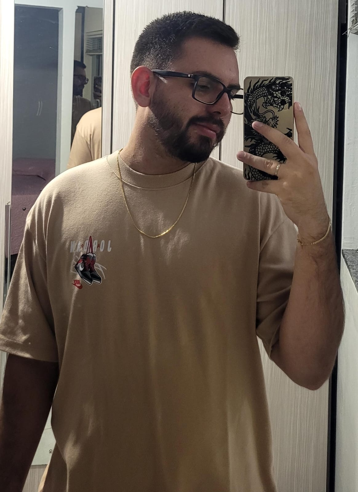

Responsável pela criação do jogo
Olá, eu sou o Caio Aydrian, o criador do jogo A Viagem Final.

Sou um estudante de Analise e Desenvolvimento de Sistemas e estou cursando o primeiro semestre. A Viagem Final é um projeto da faculdade que desenvolvi com muito esforço, e estou feliz em finalmente poder apresentá-lo.
Esse projeto foi um tanto quanto complicado de começo, mas depois de muito trabalho, e muitas horas acordado, consegui finalizar tudo e deixar do jeito que eu gostaria.